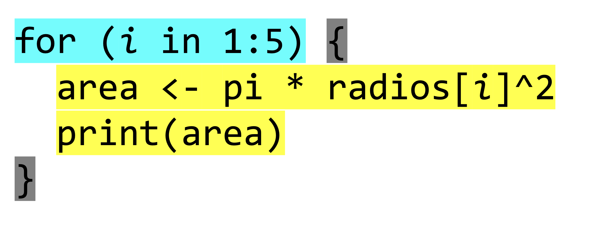

![]()
library(tibble)
pinos <- tibble(
id = 1:10,
especie = c(
"sylvestris", "nigra", "pinaster",
"sylvestris", "nigra", "pinaster",
"sylvestris", "nigra", "pinaster", "sylvestris"
),
dbh_cm = c(
30.5, 6.5, 7.2, 5.0, 28.3,
35.1, 7.0, 6.8, 40.0, 32.7
),
altura_m = c(
12.5, 13.2, 10.0, 9.5, 14.0,
15.0, 8.2, 11.8, 14.5, 12.0
)
)Estructuras de Control en Programación
(ejemplos con R)
Introducción
- Estructuras de control: Herramientas fundamentales en programación que permiten modificar el flujo de ejecución de un programa según ciertas condiciones o repeticiones.
- Son esenciales para tomar decisiones dinámicas, realizar acciones repetitivas y dirigir cómo se ejecuta el código, haciéndolo más flexible y adaptable.
Tipos de Estructuras de Control
Estructuras Secuenciales: Ejecutan instrucciones una tras otra
Estructuras de Selección (Condicionales): Permiten que un bloque de código se ejecute o no, en función de una condición. Dependiendo de si una condición es
TRUEoFALSE, el algoritmo toma un camino u otro. Tipos:- Simple: Una única condición (
if). - Doble: Incluye una alternativa (
if-else). - Múltiple: Varias alternativas posibles (
switch).
- Simple: Una única condición (
Estructuras de Iteración (Bucles): Permiten repetir un bloque de código varias veces mientras se cumpla una condición o sobre una secuencia de elementos. Tipos:
for: Itera sobre una secuencia conocida.while: Repite mientras una condición seaTRUE.repeat: Ejecuta indefinidamente hasta que se use unbreakpara detenerlo.
2. Condicionales simple
- Permiten que un bloque de código se ejecute o no, en función de una condición.
- Dependiendo de si una condición es
TRUEoFALSE, el algoritmo toma un camino u otro.
Recuerda los operadores en R:
==(igualdad)!=(distinto)>(mayor que)<(menor que)>=(mayor o igual que)<=(menor o igual que)
2. Condicionales simples
- Datos ejemplo
2. Condicionales simples
arbol <- pinos[1, ]
if (arbol$dbh_cm > 7.5) {
print(paste(
"El arbol ID =", arbol$id,
" es un adulto, y tiene un diámetro de ", arbol$dbh_cm, " cm"
))
}[1] "El arbol ID = 1 es un adulto, y tiene un diámetro de 30.5 cm"arbol <- pinos[2, ]
if (arbol$dbh_cm > 7.5) {
print(paste("El arbol ID =", arbol$id,
"es un adulto, y tiene un diámetro de", arbol$dbh_cm, " cm",
sep = " "
))
} else {
print(
paste(
"El arbol ID =", arbol$id,
"es un juvenil, y tiene un diámetro de", arbol$dbh_cm, " cm"
),
sep = " "
)
}[1] "El arbol ID = 2 es un juvenil, y tiene un diámetro de 6.5 cm"sp <- "sylvestris"
switch (sp,
"nigra" = {
n <- nrow(subset(pinos, especie == sp))
paste("Existen", n, "individuos de P.", sp)
},
"sylvestris" = {
n <- nrow(subset(pinos, especie == sp))
paste("Existen", n, "individuos de P.", sp)
},
"pinaster" = {
n <- nrow(subset(pinos, especie == sp))
paste("Existen", n, "individuos de P.", sp)
}
)[1] "Existen 4 individuos de P. sylvestris"pino1 <- pinos[1, ]
if (pino1$dbh_cm > 7.5) {
# calcula el área basal del pino en m2
area_basal <- pi * ((pino1$dbh_cm / 100) / 2)^2
print(paste(
"El árbol con ID", pino1$id,
"pertenece a la especie Pinus", pino1$especie,
"y tiene un área basal de",
round(area_basal, 4), "m².", sep = " "
))
}[1] "El árbol con ID 1 pertenece a la especie Pinus sylvestris y tiene un área basal de 0.0731 m²."Ejemplo práctico
- Se han muestreando diferentes plots circulares en pinares de repoblación para evaluar la densidad de plantación
- En cada plot (de radio variable) anotamos el número de individuos de cada especie
- ¿podrías escribir un código que calcule el área muestreada en cada plot?
library(tibble)
pinares <- tibble(
id_plot = c("syl1", "syl2", "nig1", "nig2", "nig3"),
radio_m = c(5, 6, 7, 8, 9),
n_individuos = c(10, 12, 15, 18, 20)
)pinares# A tibble: 5 × 3
id_plot radio_m n_individuos
<chr> <dbl> <dbl>
1 syl1 5 10
2 syl2 6 12
3 nig1 7 15
4 nig2 8 18
5 nig3 9 20Solucionario
Sol1. generar objetos para cada radio. Inconvenientes: código repetitivo y poco eficiente. Facilidad de cometer errores. Sol2. Crear una nueva columna en el tibble con el área de cada plot. Más eficiente y menos propenso a errores. Sol3. Crear una función que calcule el área de un plot y aplicarla a cada radio. Más eficiente y reutilizable.
radios <- pinares$radio_m
area1 <- pi * radios[1]^2
print(area1)[1] 78.53982area2 <- pi * radios[2]^2
print(area2)[1] 113.0973area3 <- pi * radios[3]^2
print(area3)[1] 153.938area4 <- pi * radios[4]^2
print(area4)[1] 201.0619area5 <- pi * radios[5]^2
print(area5)[1] 254.469pinares$area_m2 <- pi * pinares$radio_m^2
pinares# A tibble: 5 × 4
id_plot radio_m n_individuos area_m2
<chr> <dbl> <dbl> <dbl>
1 syl1 5 10 78.5
2 syl2 6 12 113.
3 nig1 7 15 154.
4 nig2 8 18 201.
5 nig3 9 20 254. calcula_area <- function(x) {
return(pi * x^2)
}
pinares$area2_m2 <- sapply(pinares$radio_m, calcula_area)
pinares# A tibble: 5 × 5
id_plot radio_m n_individuos area_m2 area2_m2
<chr> <dbl> <dbl> <dbl> <dbl>
1 syl1 5 10 78.5 78.5
2 syl2 6 12 113. 113.
3 nig1 7 15 154. 154.
4 nig2 8 18 201. 201.
5 nig3 9 20 254. 254. for (i in pinares$radio_m) {
print(pi * i^2)
}[1] 78.53982
[1] 113.0973
[1] 153.938
[1] 201.0619
[1] 254.4693. Estructuras de iteración (bucles)
- Son secuencias código que se ejecutan repetidas veces, hasta que la condición asignada a dicho bucle deja de cumplirse
¿Por qué usarlos?
- Para iterar sobre elementos de un conjunto de datos.
- Para automatizar tareas repetitivas.
- Para realizar cálculos iterativos.
Tipos de bucles:
for: Iteraciones sobre elementos definidos.while: Iteraciones controladas por una condición.repeat: Repeticiones indefinidas con una interrupción explícita.
for loop: iteraciones determinadas
Ejecuta un bloque de código para cada elemento de una secuencia predefinida.
for (item in list_of_items) {do_something(item)
}
Ejemplo:
for (i in 1:5) {
print(i * i)
}for i in range(1, 6):
print(i**2)Estudio en detalle del bucle
radios <- pinares$radio_m
radios[1] 5 6 7 8 9for (i in radios) {
area <- (pi * i^2)
print(area)
}- 1
-
Iteración:
itoma el valor de cada elemento de la listaradios. - 2
- Ejecución del código: Se calcula el área de cada plot y se imprime por pantalla
- 3
- Finalización: Si hay mas elementos dentro de la lista, el bucle se repite. Cuando se haya procesado todos los elementos, el bucle termina
[1] 78.53982
[1] 113.0973
[1] 153.938
[1] 201.0619
[1] 254.469Elementos del bucle

Elementos del bucle: Índice
Looping por valor: cuando se itera sobre un valor directamente
- Más compacto y legible
- Directamente trabaja con los valores del vector
- Útil cuando no necesitas los índices, solo los valores
for (i in radios) {
area <- pi * i^2
print(area)
}Elementos del bucle: Índice
Looping por índice: cuando se itera sobre un índice de la lista o del vector
- Más flexible y versátil
- Permite acceder tanto a los índices como a los valores
- Útil cuando necesitas los índices para realizar operaciones específicas
for (i in 1:5) {
area <- pi * radios[i]^2
print(area)
}for (i in 1:length(radios)) {
area <- pi * radios[i]^2
print(area)
}¿looping por índice o por valor?
- El resultado es el mismo, pero el enfoque depende de la tarea que estés realizando
- El bucle por índice permite realizar operaciones más complejas y personalizadas
- Permite almacenar los datos calculados en el bucle
areas1 <- vector()
areas2 <- vector(mode = "numeric", length = length(radios))- 1
- Podemos crear un vector vacío y almacenar los resultados en cada iteración
- 2
-
Crear un vector vacío tipo numérico con la longitud de la lista
radios
print(areas1)logical(0)print(areas2)[1] 0 0 0 0 0¿looping por índice o por valor?
areas1 <- vector()
for (i in 1:length(radios)) {
area <- pi * radios[i]^2
# print(area)
areas1[i] <- area
}
print(areas1)areas2 <- vector(mode = "numeric", length = length(radios))
for (i in 1:length(radios)) {
area <- pi * radios[i]^2
# print(area)
areas2[i] <- area
}
print(areas2)Práctica 1
Escribe un bucle que permita calcular el tamaño de los plots de las zonas de muestreo en hectáreas
Code
areas_ha <- vector(mode = "numeric", length = length(radios))
for (i in 1:length(radios)) {
area <- pi * radios[i]^2
area_ha <- area / 10000
areas_ha[i] <- area_ha
}
print(areas_ha)Práctica 2
Completa el siguiente bucle para que imprima los nombres de las especies de los pinares
especies <- c(
"Pinus sylvestris", "Pinus nigra", "Pinus halepensis",
"Pinus pinaster", "Pinus canariensis", "Pinus pinea"
)
for (sp in 1:length( <-???-> )) {
print(especies[ <-???-> ])
}Práctica 3
Escribe un bucle que calcule la densidad de árboles para cada parcela en pies/hectárea
Code
radios <- pinares$radio_m
arboles <- pinares$n_individuos
densidad <- vector(
mode = "numeric",
length = length(pinares$radio_m))
for (i in 1:length(radios)) {
area <- pi * radios[i]^2
area_ha <- area / 10000
densidad[i] <- arboles[i] / area_ha
}- 1
- Dos vectores de datos
- 2
- Objeto donde almacenar los resultados
- 3
-
Itera sobre el primer vector (
radios) para calcular el área - 4
-
Itera sobre el seguno vector (
arboles) para calcular la densidad
Esta práctia sirve para introducir concepto de bucle con entrada de diferentes fuentes. Usando index, podemos acceder a diferentes entradas.
Práctica 3
- ¿Podría actuar sobre un solo
data.frameotibble? - ¿Podría almacenar los resultados en ese mismo
tibble?
Code
pinares <- tibble(
id_plot = c("syl1", "syl2", "nig1", "nig2", "nig3"),
radio_m = c(5, 6, 7, 8, 9),
n_individuos = c(10, 12, 15, 18, 20)
)
for (i in 1:nrow(pinares)) {
pinares$area[i] <- (pi * pinares$radio_m[i]^2 / 10000)
pinares$densidad[i] <- pinares$n_individuos[i] / pinares$area[i]
}
pinares# A tibble: 5 × 5
id_plot radio_m n_individuos area densidad
<chr> <dbl> <dbl> <dbl> <dbl>
1 syl1 5 10 0.00785 1273.
2 syl2 6 12 0.0113 1061.
3 nig1 7 15 0.0154 974.
4 nig2 8 18 0.0201 895.
5 nig3 9 20 0.0254 786.Esta práctia sirve para introducir concepto de bucle con entrada de diferentes fuentes. Usando index, podemos acceder a diferentes entradas.
Aplicaciones
- looping en funciones
- looping sobre dataframes o tibbles ()
- Looping sobre archivos y directorios
- Almacenar datos
- Bucles anidados
while Loop: Repetición Condicional
Ejecuta un bloque de código mientras una condición sea verdadera
radios <- pinares$radio_m
i <- 1
while (i <= 3) {
area <- pi * radios[i]^2
area_ha <- area / 10000
print(area_ha)
i <- i + 1
}- 1
- Iniciamos el contador
- 2
- Condición de salida
- 3
- Código a ejecutar
- 4
- Actualización del contador
[1] 0.007853982
[1] 0.01130973
[1] 0.0153938
Inicializar las varbiables
bosques <- tibble(
id_plot = c("syl1", "syl2", "nig1", "nig2", "nig3"),
radio_m = c(5, 6, 7, 8, 9),
n_individuos = c(10, 12, 15, 18, 20)
)i <- 1
while (i <= 3) {
bosques$area[i] <- (pi * bosques$radio_m[i]^2 / 10000)
bosques$densidad[i] <- bosques$n_individuos[i] / bosques$area[i]
i <- i + 1
}
bosques# A tibble: 5 × 5
id_plot radio_m n_individuos area densidad
<chr> <dbl> <dbl> <dbl> <dbl>
1 syl1 5 10 0.00785 1273.
2 syl2 6 12 0.0113 1061.
3 nig1 7 15 0.0154 974.
4 nig2 8 18 0.00785 1273.
5 nig3 9 20 0.00785 1273.bosques$area <- vector(mode = "numeric", length = nrow(bosques))
bosques$densidad <- vector(mode = "numeric", length = nrow(bosques))
i <- 1
while (i <= 3) {
bosques$area[i] <- (pi * bosques$radio_m[i]^2 / 10000)
bosques$densidad[i] <- bosques$n_individuos[i] / bosques$area[i]
i <- i + 1
}
bosques# A tibble: 5 × 5
id_plot radio_m n_individuos area densidad
<chr> <dbl> <dbl> <dbl> <dbl>
1 syl1 5 10 0.00785 1273.
2 syl2 6 12 0.0113 1061.
3 nig1 7 15 0.0154 974.
4 nig2 8 18 0 0
5 nig3 9 20 0 0 repeat Loop: Repetición Indefinida
- Ejecuta un bloque de código indefinidamente hasta que se usa
break.
Ejemplo: obtener el dbh medio de los 5 individuos mas grandes
pinos_ordenados <- pinos[order(pinos$dbh_cm, decreasing = TRUE), ]
i <- 1 # contador
promedio <- 0 # variable donde guardar
repeat {
# promedio parcial (usando los primeros i pinos más grandes)
promedio <- mean(pinos_ordenados$dbh_cm[1:i])
# Verificar si hemos procesado más de 5 pinos
if (i > 5) {
print(paste("Promedio de dbh_cm de los 5 pinos más grandes:", promedio))
break
}
# Avanzar al siguiente pino
i <- i + 1
}[1] "Promedio de dbh_cm de los 5 pinos más grandes: 28.9666666666667"Alternativas Vectorizadas (apply, sapply, tapply)
Herramientas para aplicar funciones a estructuras de datos, pero cada una tiene su uso específico dependiendo de la estructura y el tipo de operación deseada.
apply: aplica una función a las filas o columnas de una matriz o array.sapply: aplica una función a cada elemento de una lista o vector y simplifica automáticamente la salida al formato más compacto posible (vector, matriz o lista).tapply: aplica una función a los subconjuntos de un vector, definidos por un factor o factores.
Alternativas Vectorizadas (apply, sapply, tapply)
# Calcular media de cada columna numérica
d <- as.matrix(pinos[, c("dbh_cm", "altura_m")])
apply(d, 2, mean) dbh_cm altura_m
19.91 12.07 # Identificar columnas numéricas
sapply(pinos, is.numeric) id especie dbh_cm altura_m
TRUE FALSE TRUE TRUE # Promedio de dbh por especie
tapply(pinos$dbh_cm, pinos$especie, mean) nigra pinaster sylvestris
13.86667 27.43333 18.80000 Ventajas:
- Más rápidas y concisas que los bucles tradicionales.
- Mejor adaptadas para trabajar con grandes volúmenes de datos.
purrr
¿Qué es purrr?
purrres un paquete del ecosistema tidyverse que facilita la programación funcional.
Ejemplo Comparativo
areas_ha <- vector(mode = "numeric", length = length(radios))
for (i in 1:length(radios)) {
area <- pi * radios[i]^2
area_ha <- area / 10000
areas_ha[i] <- area_ha
}
areas_ha[1] 0.007853982 0.011309734 0.015393804 0.020106193 0.025446900library(purrr)
areas_ha <- map_dbl(radios, ~ pi * (.x^2) / 10000)
areas_ha[1] 0.007853982 0.011309734 0.015393804 0.020106193 0.025446900purrr
Ventajas de purrr:
- Sintaxis más compacta y legible.
- Integración directa con otras herramientas del tidyverse.
- Mejora la eficiencia para operaciones funcionales repetitivas.
Comparación General
| Tipo de Bucle | Ventajas | Desventajas |
|---|---|---|
for |
Simple y flexible | Menos eficiente con grandes datos |
while |
Útil para condiciones dinámicas | Mayor riesgo de bucles infinitos |
repeat |
Gran control manual | Requiere interrupción explícita |
apply/tapply |
Altamente eficiente y compacto | Menos intuitivo para principiantes |
purrr::map |
Sintaxis legible y funcional | Requiere instalación adicional |
Conclusión
- Básico: Los bucles (
for,while,repeat) son fundamentales para aprender programación iterativa. - Avanzado: Las funciones vectorizadas (
apply,tapply) y paquetes comopurrrson ideales para mejorar el rendimiento y la legibilidad. - Recomendación: Usa bucles simples para aprender y alterna con soluciones vectorizadas o funcionales para proyectos más complejos.
¿Alguna duda?
Ayuda JDC2022-050056-I financiada por MCIN/AEI /10.13039/501100011033 y por la Unión Europea NextGenerationEU/PRTR

Si usas esta presentación puedes citarla como:
Pérez-Luque, A.J. (2025). Estructuras de Control en Programación (ejemplos con R). Material Docente de la Asignatura: Ciclo de Gestión de los Datos. Master Universitario en Conservación, Gestión y Restauración de la Biodiversidad. Universidad de Granada. https://ecoinfugr.github.io/ecoinformatica/